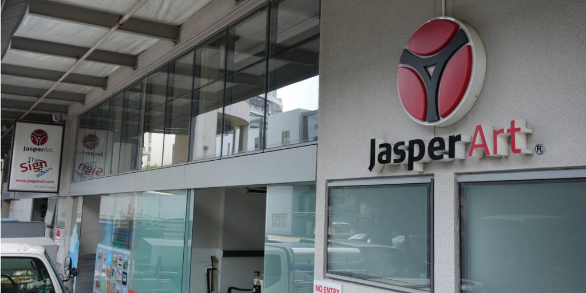
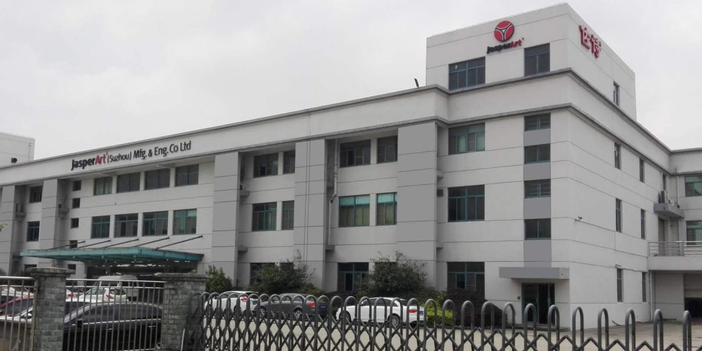

JasperArt
About JasperArt
Jasper Art was founded in 1973 and incorporated as Jasper Art Manufacturing Pte Ltd in 2002. Ever since, we have been helping both local and multi-national companies achieve their branding and advertising objectives. Along the way we have grown to becoming one of Singapore’s most established company with more than 40 years of experience in signage manufacturing and media sign printing for our customers.
Our success has been built on providing exceptional service, uncompromising quality, and best value to achieve optimal results for our clients.At JasperArt, we strive to achieve customer satisfaction and with our unparalleled after-sale service, we are one of the top and preferred media sign printing, signage manufacturing company in Singapore.
{kind=link}
In 1995, Jasper Art Suzhou 佐诗(苏州)装潢工程有限公司 was established as part of our efforts to inject diversity into the company as well as to serve our customer as they venture into the Chinese market. Our constant development to upgrade our capabilities and revamp our operations, have enable us to be at the forefront of our industry while uncovering greater cost benefits for our customers.
{kind=link}
Our Services
At JasperArt, our service covers every aspect from signage design and fabrication, installation and maintenance, to signage refurbishment. Regardless if you are a small business looking to amplify your location presence with illuminated shop sign and display mural sticker prints, or a big mall looking to enhance shopper's experience with well-placed, informative digital mall directory and directional wayfinding signs. We have wide range of signage and printage solutions to cater for your business needs. No matter how big or small a work request may be, no effort will be spared. We strongly believe that if you don’t look good, we won't look good.
Our Completed Projects
JasperArt have worked closely with some of the most prominent companies in Singapore. Our completed projects includes, high level building weather resistance large scale LED-lit letter shaped and logo signage, Large Format Print Vinyl Sticker on glass and hoarding, Large illuminated 3D moulded signage, large format full coloured print menu board, Wayfinder directional signage and digital mall directory.
Come have look at more of our completed projects at our FaceBook page https://www.facebook.com/JasperArtMfg/


If you have a project in mind, come talk to us and be amazed by what we can do to make your business stand out from the rest. Call us at 67471334 or email us at customers@jasperart.com.sg